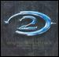

Forums galactiques > Assemblée Galactique : diplomatie officielle > Com-x de l’Aigle Sombre à l’Assemblée
Pages : 1
| Drakaan Respect diplomatique : 0  25/09 ETU 00:34 | Score : 0 Détails *********************************************
L?assemblée était encore sous le choc des premiers tirs ioniques à chaque point de coordonnée du système 0. La panique générale était encore accentuée par la rumeur qui se diffusait, affirmant que le contingent de Yik protégeant l?Assemblée, avait été décimé par un tir ionique. Pour la première fois, les commandants qui n?avaient pas fui ne craignaient plus seulement pour leur empire et leur puissance, mais aussi pour leur vie. Au milieu de cet atmosphère pré-apocalyptique, le son aigu des systèmes automatiques, prévenant de la réception d?une com-x, fit sursauter l?assemblée. L?image qui apparut sur les écrans glaça le dos de certains commandants, et particulièrement celui des commandant l?Atlante et Yable. On distinguait clairement la mise à feu de cinq croiseurs lourds ioniques. Puis l?image se déplaçait, semblant suivre le tir bleuté à la trace à toute allure, avant de ralentir de façon artificielle à l?approche de bâtiments en stationnement au point de coordonnée. L?écran devint d?un blanc immaculé, qui lorsqu?il se dissipa laissa place à une mer de débris. Seuls quelques unités, au loin, avaient survécu. Il s?agissait des flottes des commandants Yable et l?Atlante, présentes au point de coordonnée 3, celui-là même qui protégeait la planète Keeh, capitale de la Fédération. Alors l?image de l?Aigle apparut à l?écran. De nombreux commandants purent la contempler pour la première fois. Et certains se dirent que cet aigle avait décidément quelque-chose du phoenix, ce qui n?était pas pour les rassurer. Une voix grave impressionnante de par sa virilé se fit alors entendre. Elle était parfaitement nette. Chaque mot était pesé. Une certitude absolue se dégageait du rythme lent des phrases courtes. ********************************************************* « Commandants? Vous venez de voir ce qui arrivera à tout commandant se mettant en travers de mon chemin. Le système 0 m?appartient de droit. C?est lui que je revendique. Pour m?en emparer? Je suis prêt? à absolument toutes les pires horreurs que la galaxie n?ait jamais connues. Je réfute des notions aussi floues que celles de bien ou de mal. Il serait regrettable que les vies des civils soient mises en danger. Il serait très regrettable que la vie des commandants eux-mêmes doive être menacée. Ma puissance est incomparable. Vos espions n?ont été capables de repérer que mon avant-garde. Vous savez bien peu de choses de mon empire. Le gros de ma flotte est prêt à un saut hyperspatial majeur? Des hordes de kamikazes sont prêtes à s?abattre sur tous ceux qui me résisteront dans le système 0. Certains ont essayé de façon minable de me contacter par com-x. Certains ont su y mettre la forme, mais n?ont pas su faire vibrer la bonne corde en moi. D?autres encore semblent avoir compris que la Résistance était inutile. Vous parlez d?Union Sacrée? C?est surestimer l?âme humaine, étriquée et profondément égoïste. De nombreux commandants ont déjà planifié de profiter des évènements. D?autres sentent cet appel du pouvoir émerger en eux. Et croyez moi, les épouvantails habituels de la galaxie ne sont pas les plus dangereux. Vous êtes fiers de votre union avec les contrebandiers. Mais vous ne savez rien d?eux. Vous êtes vous déjà demandé pourquoi ils ne s?étaient jamais opposés à aucun apocalypse avant ma venue ? Pourquoi ceux-là même qui se prétendent « héritiers de l?Histoire » vous ont-ils toujours masqué leur existence, et ont-ils laissé tuer ces millions de civils ? Commandants, épargnez nous à tous une perte de temps, et la perte de vos hommes. Vous avez 24 heures pour procéder à un transfert de souveraineté des planètes du système 0. Je suis prêt à vous dédommager de cette perte de temps. Votre prix pourrait être le mien. Si vous refusez d?accéder à ma demande, les armes parleront, et le conflit débordera hors de ses frontières. Lorsque le système 0 sera rendu à son héritier de Droit, je pourrai procéder à des révélations majeures. Contrebandiers, votre temps est compté?. » *********************************************************** Les écrans s?éteignirent. La plupart des commandants étaient devenus blancs? d?un blanc presque aussi pur que la tenue traditionnelle des contrebandiers... | ||
| gentheman Respect diplomatique : 2  25/09 ETU 00:54 | Score : 0 Détails A toute les flottes de la Nerve, evacuation du systeme 0!!!
commandants commandantes, mieu vau l'ecouter... | ||
| Shaft Respect diplomatique : 16  25/09 ETU 01:13 | Score : 0 Détails Je ne suis pas d'accord ,
Qui est-il pour nous dicter sa loi ? Pourquoi devrions nous ecouter un sinistre personnage proferer des menaces ? Ne sommes nous pas maitre de notre destin ? Le ton de ce discours nous conduit au raisonnement logique qu'il ne s'arretera pas au systeme 0 ...Il est avide de pouvoir . Il a du tuer des millions d'innocents pour accéder a ce degré de puissance . Les commandants qu'il a du tuer ne se compte plus . Il n'est là que pour la conquête , le pouvoir et le sang . Mais ce sang , je lui ferai payer cher s'il s'avisait de m'attaquer . Je m'en remet aux commandants qui defendront leurs planetes dans le "0" et leur affirme tout mon soutien , pas que morale mais aussi logistique . Sur ce , le commandant Shaft pris une navette pour se rendre dans au sein de son complexe administratif pour prendre commande de nombreuses unitees de combats aupres des contrebandiers . | ||
| Redsamourai Respect diplomatique : 0  25/09 ETU 02:04 | Score : 0 Détails L UCI reprouve avec la derniere energie la prise de controle brutale du systeme 0, ainsi que le peu de cas que fait Aigle Sombre de la vie Humaine.
Elle remarque avec interet que, qu il s agisse de defendre ou d attaquer, les methodes d Aigle Sombre et des Contrebandiers aboutissent au meme resultat, seule semble varier leur puissance militaire. L UCI attend avec impatience lesdites revelations, sachant bien qu il faudra les nuancer au vu de leur auteur. Il semble se dessiner une situation exactement conforme aux jugements politiques de l UCI emis dans les dernieres heures, ce qui confirme donc nos inquietudes. Comme nous l affirmions hier a l assemblee et l ecrivions il y a queslques heures dans le Galacmac, nous sommes convaincus que certains commandants vont se trouver singulierement ridiculises par leur precipitation a soutenir sans condition les contrebandiers. Evidemment ceci ne nuance en rien le rejet de l attitude feodale de Aigle Sombre qui "herite" ainsi de systemes apres une apocalypse. Nous esperons simplement que les futures revelations rendront le courage aux esprits critiques et prouvera la justesse de nos positions politiques qui sont demeurees tres isolees. Pour le Soviet Supreme de l UCI, Redsamourai | ||
| Necrid Respect diplomatique : 26  25/09 ETU 02:14 | Score : 0 Détails Commandant Redsamouraï, seriez-vous prêt à faire partie d'un Comité de Salut Public Galactique ayant pour principal but la protection de la Galaxie contre les menées impérialistes du Commandant Aigle Sombre ?
| ||
| Akhenaton Respect diplomatique : 0  25/09 ETU 10:19 | Score : 0 Détails Necrid, votre idée est tres bonne, je vous suit, il me semble etre l'un des seuls a pouvoir lutter farouchement contre l'Envahisseur Aigle Sombre, alors je vous soutiendrais.
Personne n'a le droit d'envahir la Galaxie d'une telle maniere, commandant Aigle Sombre. | ||
| Boss Rroulliann Respect diplomatique : 0  25/09 ETU 10:54  | Score : 0 Détails "Commandants, il est urgent d'évacuer l'Assemblée : malheureusement, nous devons considérer le système 0 comme perdu. Une énorme menace pèse désormais sur l'ensemble de la galaxie, et nous aurons encore bien d'autres pertes...
Mais le temps presse : je propose que les 3 leaders de nos différentes factions prennent la tête d'une force d'opposition, constituée par l'ensemble des commandants disposant de l'hyperfusion. Nous devons établir entre nous tous un Traité de non-agression et laisser de coté nos querelles, si nous voulons survivre. Je continue à douter des paroles des Contrebandiers, tout comme je refuse celles de cet Aigle Sombre. Il est temps pour nous de reprendre le contrôle de notre monde. Veuillez maintenant m'excuser, je pars rejoindre mon système pour mobiliser mes troupes et organiser ma défense, et je vous conseille à tous d'en faire de même. Dès que je serai en possession de la technologie nécessaire, mes forces se joindront à celles des commandants alliés." Sur ces mots, il quitta l'Assemblée sans se retourner, le visage sombre et l'esprit envahit de mauvais présages... | ||
| Commandant Kerstan Respect diplomatique : 126  25/09 ETU 10:57 | Score : 0 Détails "Commandant Necrid..."
Les portes de l'Assemblée venait de s'ouvrir brusquement et le Commandant Kerstan s'avança d'un pas pressé vers le celui qu'il venait d'interpeller. "Vous avez le soutient total de la flotte Telarienne, je sais que je ne suis pas aussi puissant que le commandant Akhenaton, mais ce ne sera pas de trop !" Sur ce, il le salua et prit place à coté de lui. | ||
| Spectror Respect diplomatique : 0  25/09 ETU 11:16 | Score : 0 Détails "Ce commandant..."
Spectror n'en revenait pas, il a du essuyer des tirs ioniques, les flottes qui étaient à côté de Paradise, Pompéi, et Papillon ont été détruites en un rien de temps, par un tir ionique. Il tenta de se ressaisir et s'éclairci la gorge. "Je ne me laisserai pas faire, je résisterai, les planètes que je possède dans le système 0 ne subiront pas la tyranie de cet ennemi ! Je suis prêt à tirer avec mes croiseurs ioniques, et si le besoin se fera sentir, j'utiliserai l'Hyperatomiqe, car mes scientifiques viennent de décoder des informations de la base de données d'un vaisseau amiral en épave, j'hyperatomiserai, j'ioniserai, je frapperai !" | ||
| Seigneur vador Respect diplomatique : 442  25/09 ETU 11:18 | Score : 0 Détails Voila ce que nous devons faire,c'est de ne pas nous laissez faire justement!!!!!!
| ||
| Gholboi Respect diplomatique : 0  25/09 ETU 11:29 | Score : 0 Détails [Gholboi, déstabilisée par cette apparition soudaine d'Aigle Sombre, se mit a réfléchir. Après avoir écouté les dires d'autres commandants, ses idées étaient clairs, et il prit la parole:]
Vous voila donc enfin, Aigle sombre, vous aui avait fait trembler toute l'assemblée parce que vous étiez l'inconue, et comme tout le monde le sait, l'homme a toujours eu peur de l'inconnue. Mais dans certaine situation il n'ésite pourtant pas a le braver. Vous aurez donc compris que résistanceil y aura. De plus permettez moi d'ajouter que cette situation me rappel, fortement, un cas préhistorique, dont nous avons pu sauver quelques maigres données, où il était question d'une puissance qui dépassait toutes les forces armées européennes. Cette puissance avait démandé, pour garantir la paix, qu'on lui offre quelques pays. La requête fut accordé pour éviter une guerre qui aurait couté la vie a des millions de civiles. Puis cette puissance avide de pouvoir attaqua un autre pays. Et la guerre qui aurait du être évité eu bel et bien lieu. Avouez qu'il y a ressemblance entre cette siuation, et notre contexte. Bien sur la dite puissance fut éliminé par la coalition de beaucoups de petites puissances européennes et d'une autre grande puissance, la puissance capitaliste. Résumons le capitalisme. Une système économique qui fonctionne sur le principe de l'offre et de la demande. Bien sur, si cette puissance avait pris par au combats du coté de c'est nombreuses petites puissances, c'est que ses intéret économique était menacé. Cette deuxième puissance n'est pas sans nous rappeler les contrebandiers, qui non seulement en vous affrontant, sauvegarde leurs interets, Mais aussi compte bien faire un profit de cette guerre, et je cite: "Dorénavant, et pour que le peuple de la contrebande puisse faire face économiquement au conflit potentiel, les prix auxquelles nous achèteront vos unités ne pourront être supérieurs aux prix auxquels nous vous vendons nos unités." Bien qu'ils éxposent, ici, qu'il ne sagit que de survivre économiquement a la guerre, il apparait très clairement qu'il comptent fournir chaques puissances qui les soutiendra d'armes ainsi profitant des bénéfices pour acroitre leur puissance, et défaire ceux qui menace leurs interêts. Et maintenent, en conclution, nous constatons que quelque soit notre camps nous ne seront que l'instrument de leur leadeur réspectif. Ma conclution paraît bien sombre, pourtant ce n'est pas tout a fait fini. J'ai volontairement laissé de coté une troisième puissance. Une puissance qui paraissait prometteuse, mais ses troubles politiques ont eu raison de cette troisième puissance, qui finit par tomber dans l'extrème. Cette puissance avait pour idée principale, de non seulement donner au peuple un controle politique, mais aussi un controle économique. Aujourd'hui la situation n'est pas la même et nous avons la possibilité de corrigées nos erreur passé. Aujourd'hui ne laissons pas les puissants décider pour nous, Aujourd'hui réagissont, pour nos amis, nos familles, et nos peuples. Commandants de l'assemblée, Le temps de l'insuréction a sonnée. Il est temps que les tambours de guerres résonnent dans nos coeurs. Il est temps de marcher, têtes hautes, pour reprendre ce qui est a nous.IL est temps de dire NON a l'opréssion. Il est temps pour nous d'assurer notre salut dans l'histoire , et de nous unir sous une seule et même bannière. Celle des peuples libres de la galaxies. [Ainsi Gholboi avait fait son discour, actuellement placé au centre de l'assemblé, il regardait chaque commandant dans les yeux, leur tranmettant la profondeur de son message. Pour Gholboi le temps parraisait d'une extrème leuteur. Aujourd'hui il préparait l'insuréction de la galaxie. Mais une question se possait. Es que la galaxie était prète pour l'insurréction ?] | ||
| CLEMENT Respect diplomatique : 0  25/09 ETU 11:30 | Score : 0 Détails Pas de retraite pas de défaite.Il se prend pour qui j'ai vaicu pour voir beaucoup de gens prendre le pouvoir par la tiranie personne n'a reussi NON personne et je vous le dit,je ne n'abandonerait pas la guerre.JAMAIS.
Et il sortie d'un air irité. | ||
| Seigneur vador Respect diplomatique : 442 25/09 ETU 11:32 | Score : 0 Détails La silhoutte du seigneur vador se leva:
-Il a raison ne prononcons pas des paroles de paix pendant qu'Aigle sombre augment en puissance!!!!!! Il se rassit entamant une discussion avec son lieutenant | ||
| MrBurns Respect diplomatique : 0  25/09 ETU 14:35 | Score : 0 Détails Excellent ! tout se met en place... et si cet avorton d'aiglon sort de son systeme je lui envoie mon Invincible Armada !
| ||
| chewbaca42 Respect diplomatique : 0  25/09 ETU 21:49 | Score : 0 Détails chewbaca se leva et dit :
"cher commandent je vous le dit nous ne devons pas nous laisser faire ,NOUS DEVONS COMBATTRE CETTE ENEMIE AU PERIL DE NOTRE VIE SI IL LE FAUT,JE NE ME LAISSERAIS PAS FAIRE PAR CETTE AIGLE DE MALHEUR. JE LE DIT RESISTON CHER COMMANDENT" chewbaca se rassit et laissa réfléchire l'assembler à ses propos plein de bon sens | ||
| kenuo Respect diplomatique : -14  26/09 ETU 11:56 | Score : 0 Détails Les écran de controle siganlèrent un nouveau mesage, c'était le commandant kenuo qui aparu au poste de commandement de sa flotte, les quelques vitres qui donnait sur l'esapce intercidéraler laissait apparaitre une flotte impressionante!!
"Dirigeants, Représentant et guildiens, l'heure est grave, le systeme 0 est sauvagement pris d'assault par les forces de l'aigle sombre, vous même au sein de l'assemblé devait entendre les tir d'armes ionique et voires les traces des combats autour de la planete. La résistance s'organise c'est une certitude elle est dirigé par les plus puissants d'entre nous, c'est la raison de mon intervention. Nous qui ne somme a la même hauteur que l'aigle, nous avaons pour missions de défendre les plus faibles ainsi que nos systemes et nos planete, il est hors de question qu'un seul civil succombe a cette assault injustifié. C'est pourquoi je vous le demande solenelement organisez votre défense mes amis, et si quelqu'un a besoin d'aide qu'il previenne le commandant le plus proche de lui. Nous ne nous laisserons pa | ||
| kenuo Respect diplomatique : -14 26/09 ETU 12:00 | Score : 0 Détails .... Un bruit retenti et l'image se brouilla, kenuo réapparu au bout d'un instant.
Nous nous défendrons et nous survivrons, vive la liberté, vive la résistance, ***************Communication interompu**************** La guerre se préparait et la déclaration de kenuo avait montré sa determination a s"engager a défendre ses biens, mais qu'est-ce que l'avenir allait lui réserver?! HRP (désolé pour le double post) | ||
| Ariétan Respect diplomatique : 544  26/09 ETU 13:10 | Score : 0 Détails A la vue d'Aigle Sombre, le Commandant Ariétan ne pu s'empecher de sourire, il se leva et d'une voix sombre dit
"il est temps chers commandants, de payer vos erreurs..." la garde de l'assemblée compris immédiatement et se rua sur lui mais il les pris de vitesse et s'évapora dans la nuit sombre à bord d'un vaisseau rapide. |
Pages : 1
Forums galactiques > Assemblée Galactique : diplomatie officielle > Com-x de l’Aigle Sombre à l’Assemblée